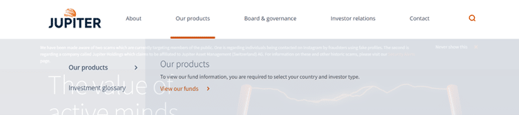
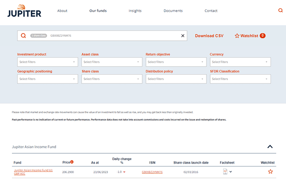
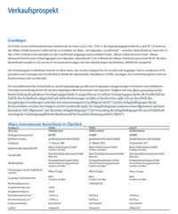
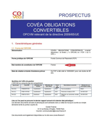
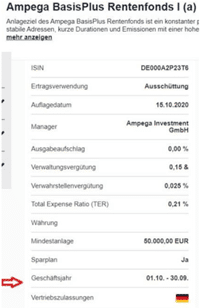
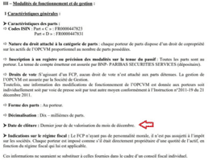
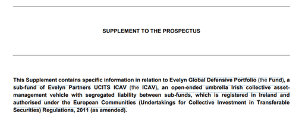
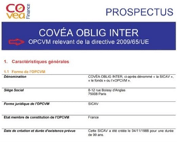
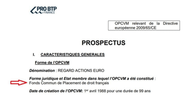
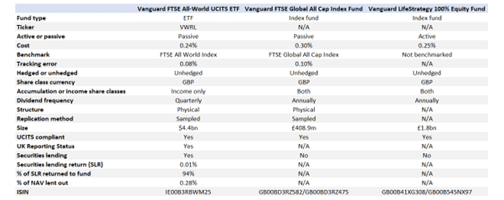

Getting Started
About
Pricing
Team
Blog
Getting Started
About
Pricing
Team
Blog
Finding Financial Reference Documents
Issuer Name: Accessing Official Websites
When analysts need to find financial reference documents, such as prospectuses, KIIDs (Key Investor Information Documents), factsheets, annual reports, or specific announcements, it is recommended to begin by accessing the issuer's official website. Most issuers have a dedicated section on their website called "Funds," "Our Funds," or "Funds Centre," where they provide comprehensive information about their funds.

Exhibit 1.A - On Jupiter Asset Management’s website,
jupiteram.com, there is a section labeled ‘Our Products’
which allows you to view all of their funds.
When analysts need to find financial reference documents, such as prospectuses, KIIDs (Key Investor Information Documents), factsheets, annual reports, or specific announcements, it is recommended to begin by accessing the issuer's official website. Most issuers have a dedicated section on their website called "Funds," "Our Funds," or "Funds Centre," where they provide comprehensive information about their funds.
Within the Funds Centre, analysts can find a collection of documents related to each fund. Alternatively, analysts can search for a specific ISIN (International Securities Identification Number) and access the summary page of that ISIN, which will retrieve all the relevant documents associated with it.
Why is this important? By accessing the issuer's official website, analysts can directly obtain the most up-to-date and accurate information about the fund they are researching. This ensures that they have access to the latest prospectuses, KIIDs, and other important documents.
For example, if an analyst is looking for information on a fund managed by Jupiter Asset Management, they can visit Jupiter’s website and navigate to the Funds Centre or search for the specific ISIN of the fund they are interested in. This approach guarantees access to the official and authorised documents pertaining to that particular fund.
1.2 ISIN: Identifying and Locating Documents
Another useful method for finding financial reference documents is by utilising the ISIN. An ISIN is a unique identification code assigned to a specific security or financial instrument, such as a fund. It serves as a universal identifier, facilitating the identification and tracking of securities across various platforms and databases.
 Exhibit 1.C - In the image above, the ISIN ‘GB00BZ2YNM76’ has been utilised in order to find Jupiter’s Asian Income Fund.
For example, let's consider funds based in the United Kingdom (GB). The ISINs for GB-based funds typically begin with "GB" followed by a combination of letters and numbers. An example of an ISIN for a GB-based fund could be GB00BZ2YNM76.
The importance of ISINs lies in their ability to streamline the search process for financial reference documents. By inputting the ISIN into relevant platforms or databases, analysts can quickly locate the necessary documents associated with that specific fund. This saves time and ensures accuracy in retrieving the required information.
1.3 Sub Fund Name: Targeted Document Search
In addition to using the issuer's official website and ISINs, analysts can also employ the sub fund name to find specific financial reference documents. A sub fund refers to a division or subset of a larger investment fund, often categorised based on specific investment strategies, geographical focus, or other criteria.
To find documents using a sub fund name, analysts can begin by understanding the naming conventions employed by the issuer. For example, if a fund has multiple sub funds focusing on different regions, the sub fund names may indicate the targeted region, such as "Global Equity Fund - Asia Pacific" or "European Bond Fund - High Yield."
By identifying the relevant sub fund name and referencing the issuer's website or other financial data platforms, analysts can easily locate the corresponding documents for the desired sub fund. This targeted approach allows analysts to access information specific to their research needs and gain a deeper understanding of the particular investment area.
For instance, if an analyst is interested in exploring the "European Equity Fund - Small Cap" within a fund family, they can search for this specific sub fund on the issuer's website or other reputable financial databases.
Understanding Reference Data Fields for Non-English Country Funds
For funds, we rely on primary sources, such as the issuer's website, to gather information from documents like the prospectus, KIID, factsheets, or year-end accounts. In some exceptional cases,you may need to cross-reference publicly available sources like Morningstar, FundSquare, FE Fundinfo, or the Financial Times to confirm data.
2.1 Field - Issuer Name
In many cases, especially in countries like France and Germany, the issuer is typically the same as the management company. Below, we'll illustrate this concept using Allianz Internationaler Rentenfonds as an example.
 Exhibit 2.A - This above prospectus from Allianz International Retenfolds shows Allianz Global Investors GmBH as a fund issuer.
However, in some countries like Austria, Liechtenstein, and Switzerland, the issuer may differ from the management company. In these instances, we'll use the name provided on the first page of the prospectus as the issuer's name.
2.2 Field - Country of Incorporation
The country of incorporation is where the fund is established or constituted. Let's examine an example from a French fund's prospectus to understand this field.

Exhibit 2.B - The image above shows the above fund was established in France
For German funds, information about the country of incorporation can be found under the "Firma, Rechtsform und Sitz" chapter in the prospectus.
Please note that the country of incorporation might differ from the country of registration.
2.3 Field - Financial Year End
The financial year end is a crucial detail that can be found in the prospectus, the summary page of the share class, or the annual report. In most cases, you can easily locate this information on the summary page of the ISIN.  Exhibit 2.C - The above image shows that the financial year end for the ISIN ‘DE000A2P2316’ occurs on the 30th September  Exhibit 2.D - The above image shows the financial year end for the above fund occurs in December
2.4 Field - Umbrella Name
Funds can be established as standalone entities or as part of an umbrella construction with multiple sub-funds. This field is not mandatory, meaning it can remain empty if a fund is not part of an umbrella structure. To determine if a fund falls under an umbrella construction, you'll need to refer to the prospectus.
 Exhibit 2.E - The above image shows that the Evelyn Global Defensive Portfolio fund is a part of the Evelyn Partners UCITS ICAV umbrella.
2.5 Field - Fund Type
Funds can be categorised as either UCITS or AIFs. Typically, open-ended funds are set up as UCITS. However, Liechtenstein has a unique fund type known as Other Investment Undertakings (IU), which includes four specific categories: IU for single investors, IU for families, IU for interest groups, and IU for affiliated groups. This information is easily accessible on the first page of a prospectus or in KIIDs/factsheets.
 Exhibit 2.F - The above image shows a prospectus for an OPCVM (Other Investment Undertakings)
2.6 Field - Legal Structure
The legal structure of a fund is usually on the first page of the prospectus. In some cases, you may find it in sections like "Grundlagen." Different countries have distinct legal structures for retail funds:
● Germany: Limited Partnerships, Investment stock corporations with variable capital (Investmentaktiengesellschaft mit veränderlichem Kapital), and Contractual investment funds (Sondervermögen).
● France: Contractual Investment Fund or Fonds Communs de Placement (FCP) and Open-ended investment companies or Sociétés d'Investissement à Capital Variable (SICAV).
● Austria: Contractual investment funds (Sondervermögen).
● Switzerland: Contractual Investment Fund (FCP) and SICAV.
● Belgium: Contractual Investment Fund (FCP) and Société d'investissement (SICAV).
● Liechtenstein: Contractual Investment Fund (FCP), SICAV, Trust form (collective trusteeship), and Limited partnerships (for AIFs).
 Exhibit 2.G - The above image shows the legal structure on the first page of this French fund, with the legal structure being Fonds Commun de Placement
2.7 Field - Country of Register
The country of registration is derived from the country code within the ISIN, such as DE for Germany, FR for France, IE for Ireland, and so on.
 Exhibit 2.H - The above image shows 5 different ISINs for Vanguard funds, one starting with IE and the other starting with GB. This shows Ireland (IE) as a country of registration and Great Britain (GB) as a country of registration.
2.8 Field - Management Company Name and Address
You can find the name and address of the management company in the prospectus, as shown in the example below: